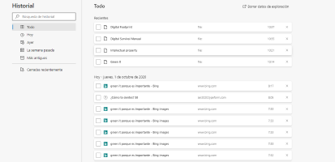

It's the body of data that exists as a result of actions... Is everything we search, every password you create, every photho you take, in summary its everything we do in a data base like cell phones, tablets, computers, PC..

This data trace can be left on the internet, computers, mobile devices or other mediums, and after leaving the footprint theres no turning back

Pasive digital footprint: Is a data trail you unintentionally leave online.
Like your search history
Active digital footprint: includes data that you intentionally submit online.
Every message you send, every tweet you post, every photo you post...

Once you do a reserch, post on your social media, every youtoube video...
always remember is almost imposible to delet the moves you do on internet.
So please be carfull with the things you do.